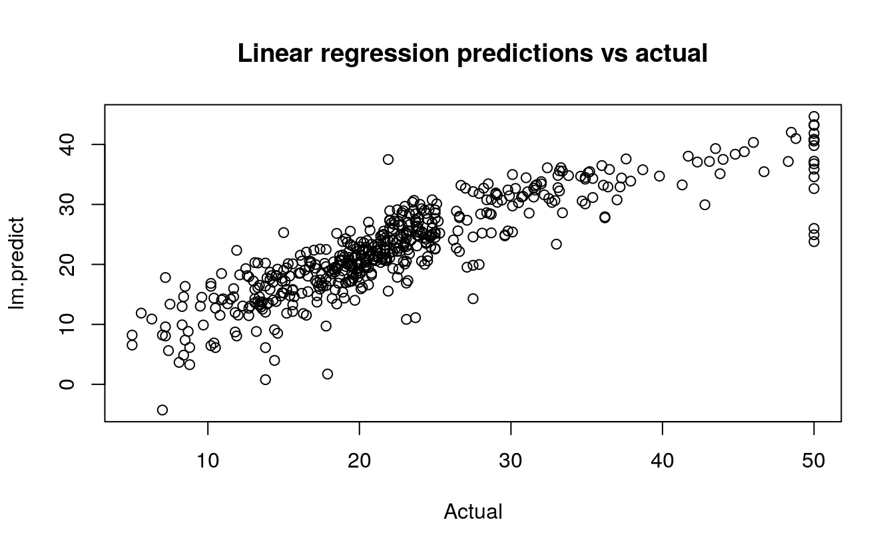
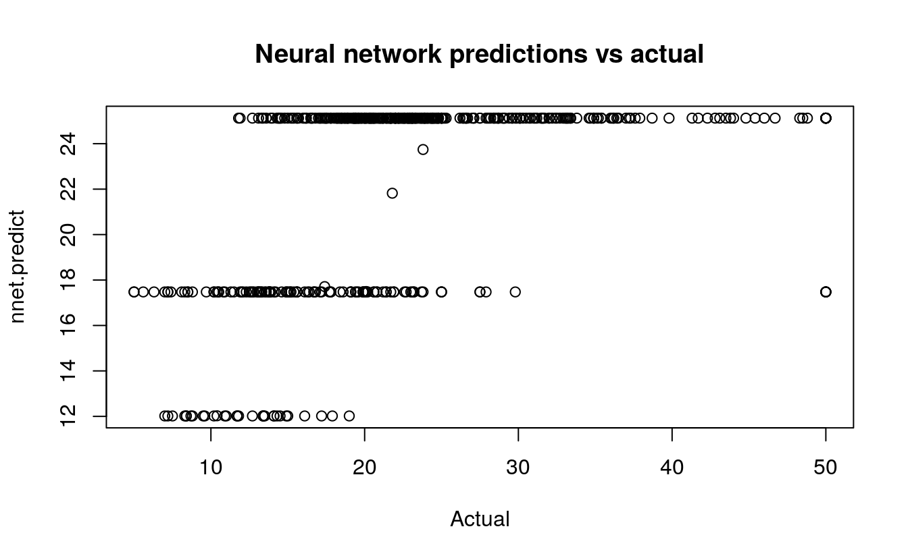

36 Regression with a neural network
- Dataset:
BostonHousing - Algorithms:
- Neural Network (
nnet) - Linear Regression
- Neural Network (
###
### prepare data
###
library(mlbench)
data(BostonHousing)
# inspect the range which is 1-50
summary(BostonHousing$medv)
#> Min. 1st Qu. Median Mean 3rd Qu. Max.
#> 5.0 17.0 21.2 22.5 25.0 50.0
##
## model linear regression
##
lm.fit <- lm(medv ~ ., data=BostonHousing)
lm.predict <- predict(lm.fit)
# mean squared error: 21.89483
mean((lm.predict - BostonHousing$medv)^2)
#> [1] 21.9
plot(BostonHousing$medv, lm.predict,
main="Linear regression predictions vs actual",
xlab="Actual")
##
## model neural network
##
require(nnet)
#> Loading required package: nnet
# scale inputs: divide by 50 to get 0-1 range
nnet.fit <- nnet(medv/50 ~ ., data=BostonHousing, size=2)
#> # weights: 31
#> initial value 17.039194
#> iter 10 value 13.754559
#> iter 20 value 13.537235
#> iter 30 value 13.537183
#> iter 40 value 13.530522
#> final value 13.529736
#> converged
# multiply 50 to restore original scale
nnet.predict <- predict(nnet.fit)*50
# mean squared error: 16.40581
mean((nnet.predict - BostonHousing$medv)^2)
#> [1] 66.8
plot(BostonHousing$medv, nnet.predict,
main="Neural network predictions vs actual",
xlab="Actual")
36.1 Neural Network
Now, let’s use the function train() from the package caret to optimize the neural network hyperparameters decay and size, Also, caret performs resampling to give a better estimate of the error. In this case we scale linear regression by the same value, so the error statistics are directly comparable.
library(mlbench)
data(BostonHousing)
require(caret)
#> Loading required package: caret
#> Loading required package: lattice
#> Loading required package: ggplot2
mygrid <- expand.grid(.decay=c(0.5, 0.1), .size=c(4,5,6))
nnetfit <- train(medv/50 ~ ., data=BostonHousing, method="nnet", maxit=1000, tuneGrid=mygrid, trace=F)
print(nnetfit)
#> Neural Network
#>
#> 506 samples
#> 13 predictor
#>
#> No pre-processing
#> Resampling: Bootstrapped (25 reps)
#> Summary of sample sizes: 506, 506, 506, 506, 506, 506, ...
#> Resampling results across tuning parameters:
#>
#> decay size RMSE Rsquared MAE
#> 0.1 4 0.0830 0.790 0.0571
#> 0.1 5 0.0814 0.798 0.0559
#> 0.1 6 0.0799 0.806 0.0549
#> 0.5 4 0.0908 0.757 0.0626
#> 0.5 5 0.0897 0.762 0.0622
#> 0.5 6 0.0890 0.766 0.0620
#>
#> RMSE was used to select the optimal model using the smallest value.
#> The final values used for the model were size = 6 and decay = 0.1.506 samples
13 predictors
No pre-processing
Resampling: Bootstrap (25 reps)
Summary of sample sizes: 506, 506, 506, 506, 506, 506, ...
Resampling results across tuning parameters:
size decay RMSE Rsquared RMSE SD Rsquared SD
4 0.1 0.0852 0.785 0.00863 0.0406
4 0.5 0.0923 0.753 0.00891 0.0436
5 0.1 0.0836 0.792 0.00829 0.0396
5 0.5 0.0899 0.765 0.00858 0.0399
6 0.1 0.0835 0.793 0.00804 0.0318
6 0.5 0.0895 0.768 0.00789 0.0344 36.2 Linear Regression
lmfit <- train(medv/50 ~ ., data=BostonHousing, method="lm")
print(lmfit)
#> Linear Regression
#>
#> 506 samples
#> 13 predictor
#>
#> No pre-processing
#> Resampling: Bootstrapped (25 reps)
#> Summary of sample sizes: 506, 506, 506, 506, 506, 506, ...
#> Resampling results:
#>
#> RMSE Rsquared MAE
#> 0.0988 0.726 0.0692
#>
#> Tuning parameter 'intercept' was held constant at a value of TRUE506 samples
13 predictors
No pre-processing
Resampling: Bootstrap (25 reps)
Summary of sample sizes: 506, 506, 506, 506, 506, 506, ...
Resampling results
RMSE Rsquared RMSE SD Rsquared SD
0.0994 0.703 0.00741 0.0389 A tuned neural network has a RMSE of 0.0835 compared to linear regression’s RMSE of 0.0994.